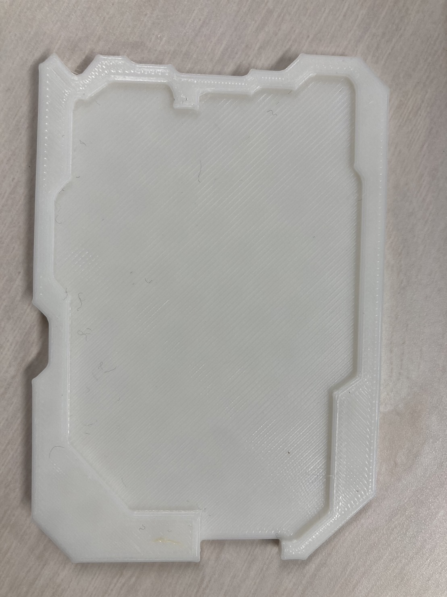

最終課題
1/9 2024
デジタルファブリケーション
JPとは？
JINDAI PAYの略でお金の代わりに大学内でのみ使えるポイントのこと。GPAや習得単位、学内バイトによって ポイントが支給され、学内の生協や食堂などで使える。残りのポイントはwebstationで確認できる想定だ。
支払い時に使用するもの
支払いする際にはIDカードを使う。これを端末にかざすことによって自動的に決済が行われる。 また残りの残高はWebstationで確認することができる。VISAタッチに近いかもしれません。
IDカード
IDカードにはほかにも搭載している機能があってその一つが出席カードリーダー。いつも学生証を 端末にかざしていると思うが、割と個人情報かいており、それが嫌なんでそれもIDカードでできるようにする。
カードの特殊形状について
IDカードは他のカードと差別化するために特殊形状を採用している。 と建前を書いてみましたが結局のところ幼馴染がせっかく乗り気で 考えてくれたデザインを使わないの申し訳ないなと思っているところがあります。 デザイン考えてくれてありがとう
デザインについて
デザインに関してはデフォルトのものを用意しますがXBPの人たちは先生先輩含めてなんか個性とか主張が強めですごい面白くて そこの部分を活かしてもらえたらいいなぁと思ったのでデザイン枠を用意してそれの内側にデザインを描いてオリジナルデザイン を作れるようにする。
システムスケッチ